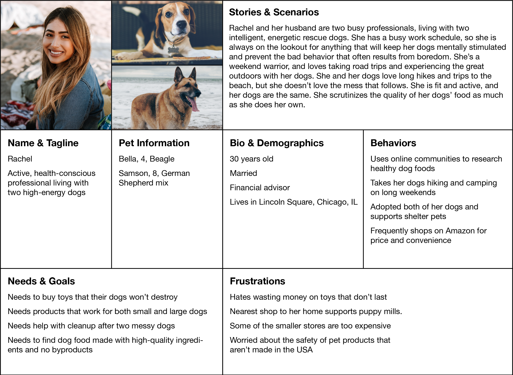

Bark & Addison
A conceptual E-commerce website
Overview
Bark & Addison is a fictional pet store that has been selling premium dog food and supplies in the Lakeview neighborhood of Chicago since 1995. Facing increasing competition, they are looking to improve their web presence and sell some of their most popular products online. My goal is to use user-centered design principles to convert more visitors into customers.
My role: I was the sole researcher and designer
Timeline: 2-week design sprint
Discovery & Research
Business Analysis
I looked at the websites of other online pet retailers: Chewy, Petco, Petsmart, and Pet Supplies Plus. Features were similar across their e-commerce sites. Most of them included product reviews, product suggestions, automatic shipping of food based on a customer's chosen timeline, and loyalty programs. Another common feature was the ability to add a profile for your pet, but this feature was very basic and was mainly used to track the pet's prescriptions.
User Interviews
I used a combination of questionnaires and follow-up interviews with dog owners to learn more about their demographics and determine what factors they looked for when shopping for their dogs. I compiled these insights into an affinity map to look for common themes.
Key Takeaways
- Concerned with their pet’s specific health needs, and struggle to find food and treats to work with their allergies and preferences
- Worry about the safety of toys and food
- Price-conscious but willing to spend more for unique products
- Value the convenience of big box stores and delivery, but appreciate the trustworthy and knowledgeable staff of small stores
Personas
I used the information from my research to develop two personas.
 Download Personas as a PDFProblem Statement
Dog owners need a way to combine the convenience of online ordering while still receiving the personalized care of a small dog boutique so they can easily take care of their dogs’ specific needs.
Hypothesis
Let the user enter information about their dogs' restrictions and preferences to automatically receive customized recommendations based on the products' metadata.
Design
Information Architecture
I ran one round of open card sorting, followed by another round of card sorting to determine how the products should be organized. The participants in both rounds were dog owners, so they had an understanding of the products
User Flows
Applying my user and competitive research, I laid out the user flows for the most common processes. Here is an example of how a user would add a pet to their account, one of the key features of this site.
Download User Flow as a PDFWireframes
After some quick sketching, I jumped into creating low fidelity wireframes in Sketch.
Testing & Revisions
User Testing
To prepare for testing, I created a clickable prototype from the wireframes in InVision. I performed two rounds of user testing, with three testers participating in each round. Users were asked to purchase a bag of dog food, make a profile for their dog, and browse their dog’s suggested products
One of the key takeaways from testing was that the users weren't sure if an item had been added to their cart. I decided to have a popup appear, at least for the first time they add a product to their cart, so they were able to clearly receive that feedback.

Another issue was that some of the users weren't sure how to see their dog's suggested products as soon as they added their dog's profile. I improved that by adding a prominent button.
High Fidelity Wireframes
Taking into account the learnings from user testing, I created my final high-fidelity wireframes and prototype.

Next Steps
With more time, I would take the following steps:
- I would further test the layout of the "shop" menu to find the best way to highlight the user's personalized recommendations
- Most online pet stores offer auto-shipping on dog food, adding this would ensure repeat purchases.
- Incorporate a loyalty program to increase return visits.
- Tie in support for shelter dogs, as that is an issue important to many of our users.